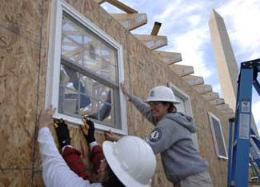

Do you dream of building your own house, but have no construction skills? You could enroll in a tech school to get some training - or quit your job and become a construction worker. But if you’re not ready for a career change, you can help yourself while helping others as a volunteer with Habitat for Humanity.
Habitat for Humanity is a nonprofit organization with the goals of eliminating poverty housing and providing decent shelter to everyone. Homeowners who will live in Habitat houses contribute to building or renovating their house and pay low- or no-interest mortgages.
As a volunteer for Habitat, you can learn about framing, masonry, siding, roofing, painting, finish work and more. You’ll generally learn standard construction methods for your area - it could involve adobe in the Southwest, for example. And crew leaders are accustomed to a variety of skill levels (even people with no skills at all). One of the great things about Habitat houses is that they’re fairly simple structures so that volunteer crews can build them, and owners can maintain them, easily.
Start by finding a local chapter of Habitat for Humanity, then ask the volunteer coordinator when you can get to work. Usually, you can spend part of a Saturday volunteering. You probably won’t be expected to be there for a full day.
The first time you volunteer might feel a little like the first day of high school. You might be awkward in this new construction environment. But stick with it; go back again. Prove that you’re dedicated to learning and becoming a productive volunteer. Each time you volunteer you’ll learn something and gain more trust from the experienced leaders/coordinators. And you’ll meet and learn from people with diverse skills and interests.
Women Build provides a special opportunity for women to get involved with Habitat.
For a broader building experience, consider applying to become a Global Village volunteer. The Global Village program combines a more intensive experience with travel in the United States or abroad. “Volunteers” pay for travel and other expenses.
In addition, Habitat offers long-term volunteer opportunities. In some cases, stipends are offered.
To find out what Habitat for Humanity is doing for the environment, read Habitat For Humanity Goes Green! Many chapters sponsor a ReStore to sell recycled materials. Read Save Money With Used Building Materials.
|
 HFHI/KIM MACDONALD Habitat for Humanity offers several opportunities for volunteers, from a one-day experience in your area to two-week “vacations” abroad to a year or more as part of AmeriCorps. |
|
|